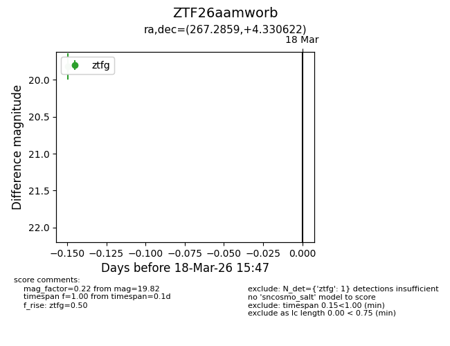
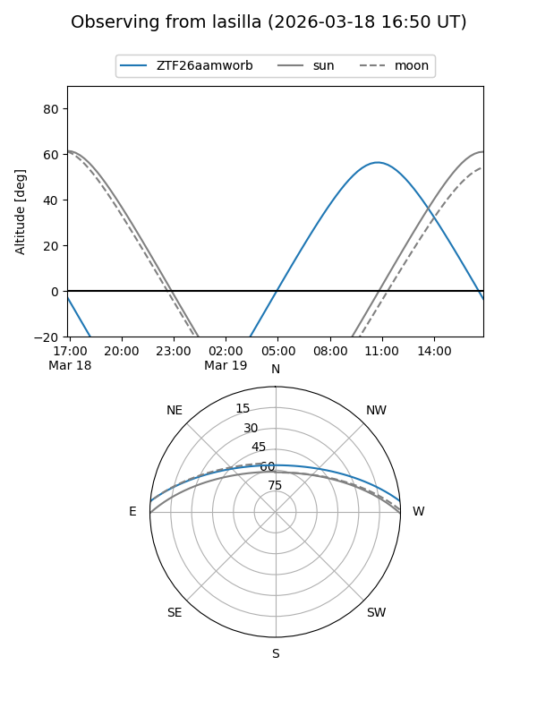
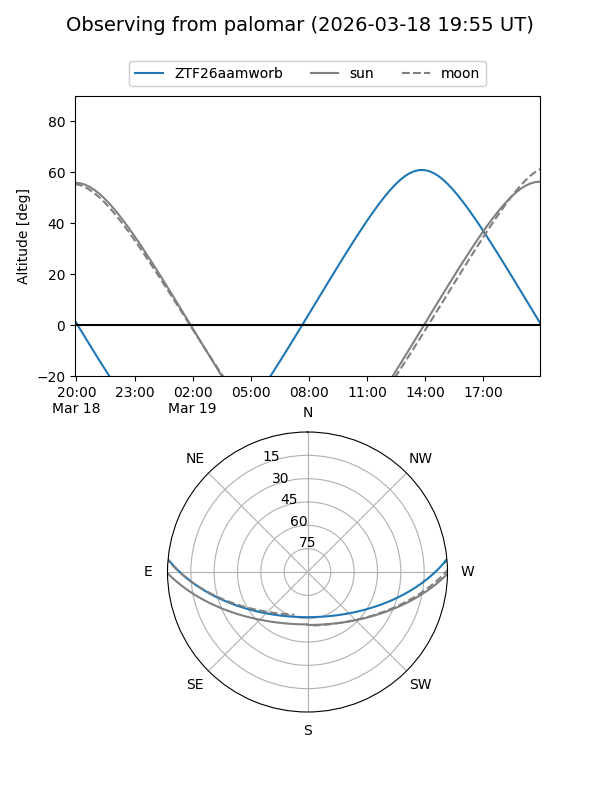

ZTF26aamworb
Target ZTF26aamworb at 2026-03-18 15:49
Aliases and brokers:
FINK: link
Lasair: link
ALeRCE: link
alt names
ZTF26aamworb (ztf,fink_ztf)
Coordinates:
equatorial (ra, dec) = 267.2859,+4.33062
equatorial (HMS+DMS) = 17:49:08.62,+04:19:50.24
galactic (l, b) = (29.6627,+15.82438)
Flags:
Photometry:
last ztfg=19.82
1 ztfg detections
Lightcurve

Visibility


Additional plots